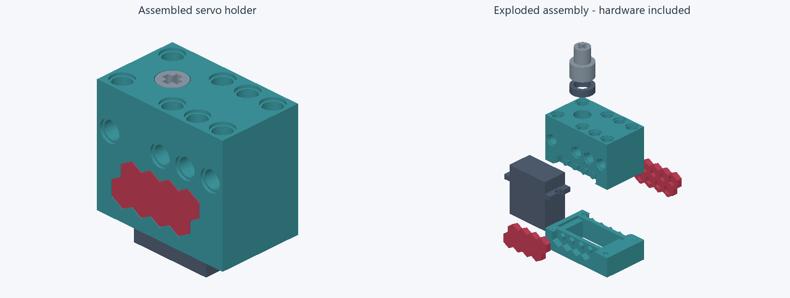
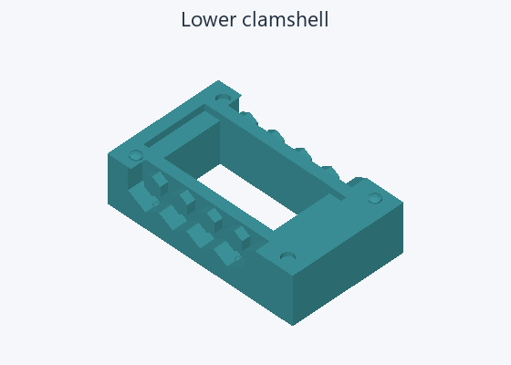
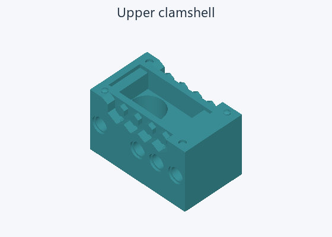
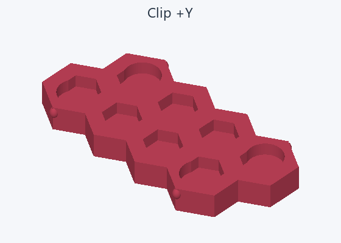
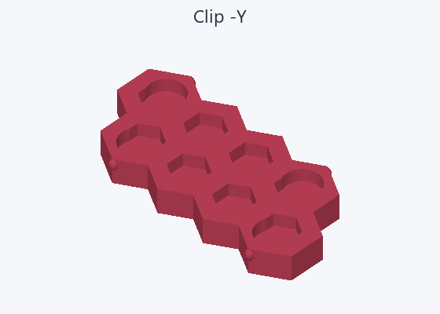
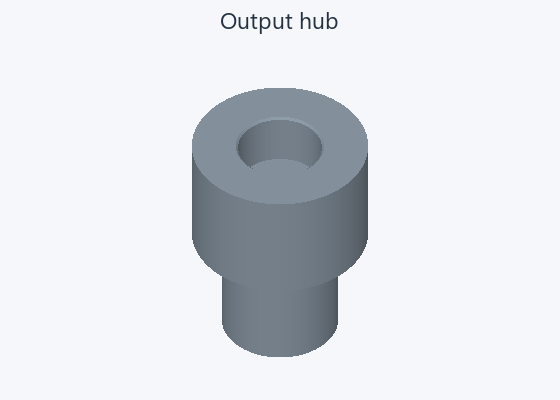
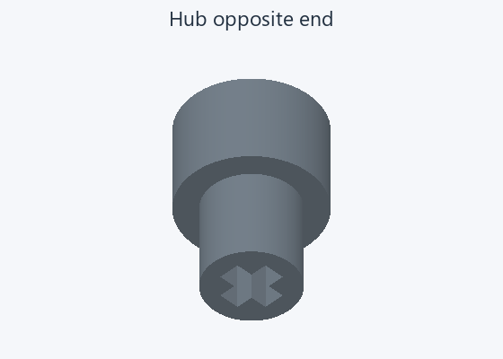
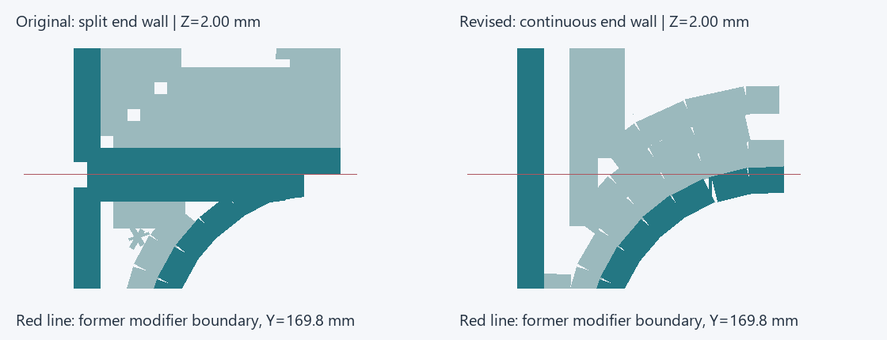

GO for a confirmation PETG print
Five printable parts pass the mesh and fresh-slice checks. Your previous print fits reasonably. Confirm the revised surface finish and retention before putting it into service.

Teal: two shells. Red: two clips. Light grey: output hub. Dark grey: purchased INJS2065 servo and MR128 bearing. All seven assembly parts are shown; five are printed.






Exact printable meshes, unchanged by the groove fix. Hub shown from both ends.

Actual native G-code at Z ≈ 2 mm, magnified at one former modifier boundary. Dark teal: outer wall; pale teal: other extrusion. The revised wall crosses the red boundary continuously. This shows toolpaths, not measured printed finish.
Use assembly-uniform-shells.3mf from review/grooves-20261105. The older files in print/ still contain the regional modifiers. Bambu Studio estimate: 3 h 25 min · 22.49 g. No supports or brims; no print started.
Review: 2026-11-06. Mesh closure and sliceability pass; long-term creep, fatigue and retention forces remain unqualified.